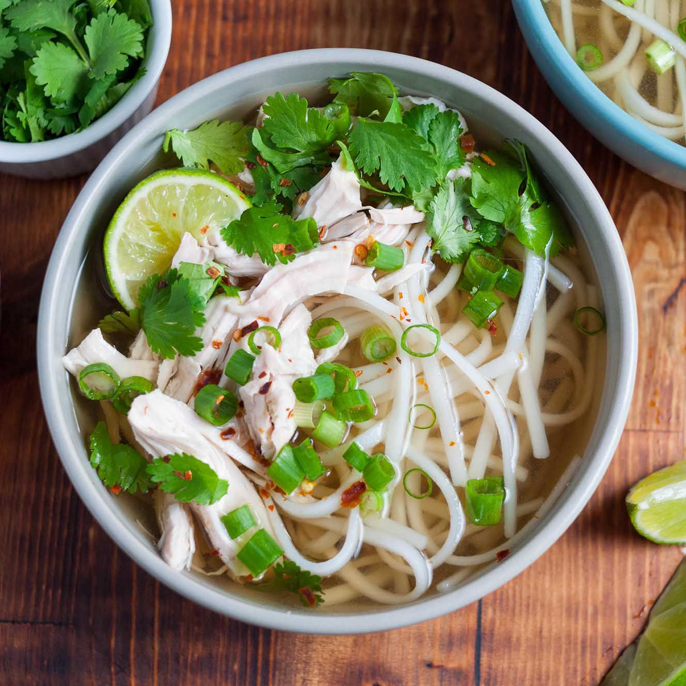

Pho Ga (Chicken Pho)
Description
This is an easy and quick recipe to make chicken pho or
Pho Ga. If you don't have a lot of time to make beef pho and
still want similar flavours, then this is the recipe for you.
There is no really correct way of eating pho. I'm
of the opinion that people are allowed to do what they want
with their own food. For me, I like to taste the broth as it
was meant to be tasted, and dip slies of meat into a tray of
hoisin and Sriracha on the side. Still get the sauce punch
occasionally, and get the broth how it was meant to be.
Ingredients
Aromatics
- 2 medium white or yellow onions roasted
- 20 g fresh ginger
Spices
- 2 tbsp coriander seeds
- 1 cinnamon stick
- 2 star anise pods
Broth
- 1 whole chicken
- 4L of water
- 2 tbsp salt
- 2 tbsp sugar
- 2 tbsp fish sauce (more for taste at the end)
Noodles
- 16 oz (1 pack) dried pho noodles
Accoutrements
these are optional but welcomed.
- bean sprouts
- thai basil
- lime (sliced into wedges)
- culantro
- hoisin sauce
- Sriracha sauce
Instructions
- Soak your rice noodles in boiling water before you start
prepping
- on a roasting tray, lay a sheet of aluminium foil and
put aromatics on top. Roast in the oven on 375-400F for
15 - 30 minutes or until dark brown.
- Add the aromatics, spices and broth ingredients into
a large stock pot and bring to a boil on high heat. Once
it hits a boil, lower the heat to low and cook the chicken
for 25 - 40 minutes until the chicken is cooked all the way
through. It is important to not have the broth on a hard boil
because it will make the broth cloudy.
- remove the chicken when cooked and rinse in cold water
for a minute to cool. This will prevent the chicken from
turning dark. Once cooled, shred chicken into small pieces.
- Your rice noodles should be mostly cooked now, you can
strain your noodles. Get a smaller pot of boiling water
and blanch the noodles for 30 seconds and it will be fully
cooked.
- Assemble your bowl with your noodles, chicken and any
of the accoutrements of your choice. Ladle in your broth
and enjoy!